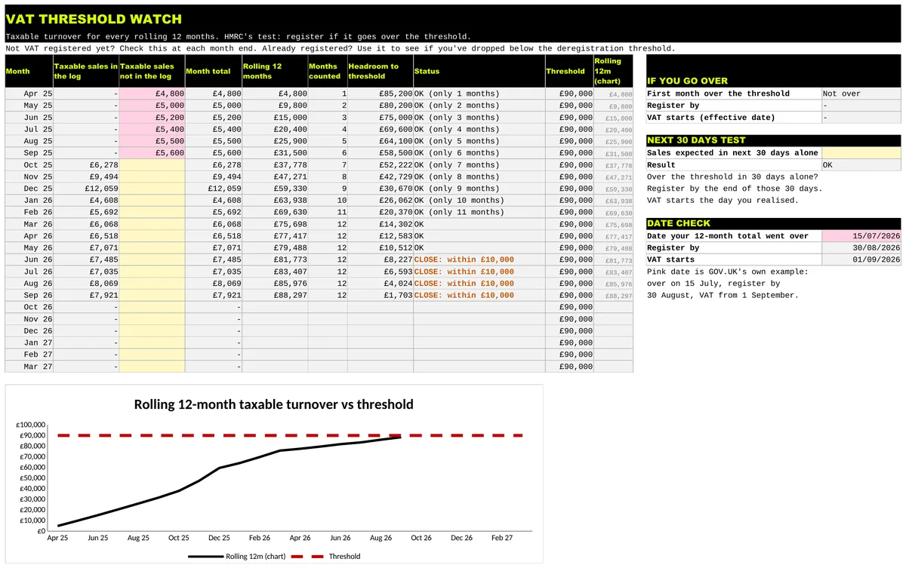

TEMPLATE 08 / VAT
UK Small Business Sales Dashboard and VAT Threshold Watch
Most small businesses know roughly what they sold last month. Fewer know their margin by product line, or how close they are to the VAT threshold on the rolling 12 months HMRC actually tests. This workbook does both jobs.
PRICE ON GUMROAD£12.99
Buy on GumroadEstimate, not tax advice. If you are close to the line, talk to an accountant.

Who it's for
- UK small businesses that want sales, margin and targets in one place.
- Anyone who needs to see how close they are to the VAT threshold.
What's included
- Sales Log: one row per sale, market day or week. Quantity, price, discount and cost give net sales, gross profit and margin. A VAT type per row keeps exempt and out of scope income out of the VAT figure.
- Dashboard: net sales, gross profit, margin, sales against target, orders and average order value, by month, category and channel.
- VAT Watch: taxable turnover for every rolling 12 months against £90,000, with headroom, a warning when you are within £10,000 (you can change it), the date to register by, the date VAT starts and the next 30 days test.
- Settings for your own categories and channels, and pink example data to overwrite.
- Rates & Sources: every rule linked to GOV.UK. The VAT dates match GOV.UK's worked example.
Works in Excel, Google Sheets and LibreOffice. No macros.
What it isn't
- Bookkeeping or filing VAT returns.
- Mid month checks. It checks at month ends, so a big sale mid month can tip you over sooner.
Preview

Free calculator
Want a quick figure first? No sign up.
Sales dashboard and VAT threshold watch £12.99 on Gumroad
Estimate, not tax advice. If you are close to the line, talk to an accountant.
More templates
- CIS subcontractor tracker £14.99
- CIS contractor tracker £14.99
- Mileage and expenses log Lite Free, pay what you want (£0+)
- Both sides of CIS bundle £21.99
- Executor and probate tracker £19.99
- Gifts and IHT 7 year tracker £12.99
- Freelancer time, invoice and late payment tracker £14.99